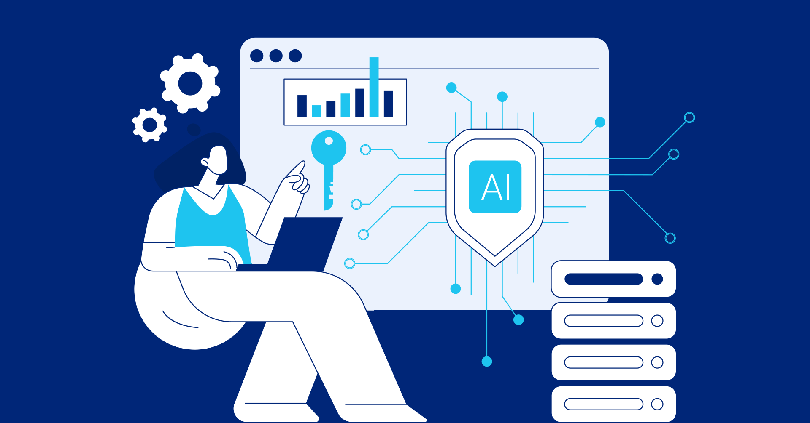
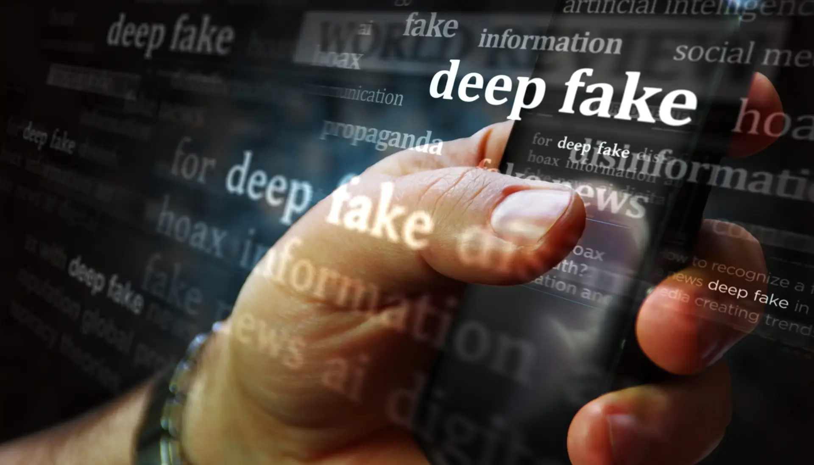
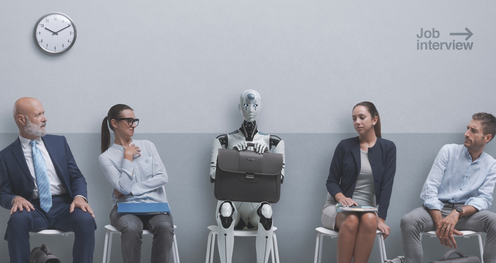
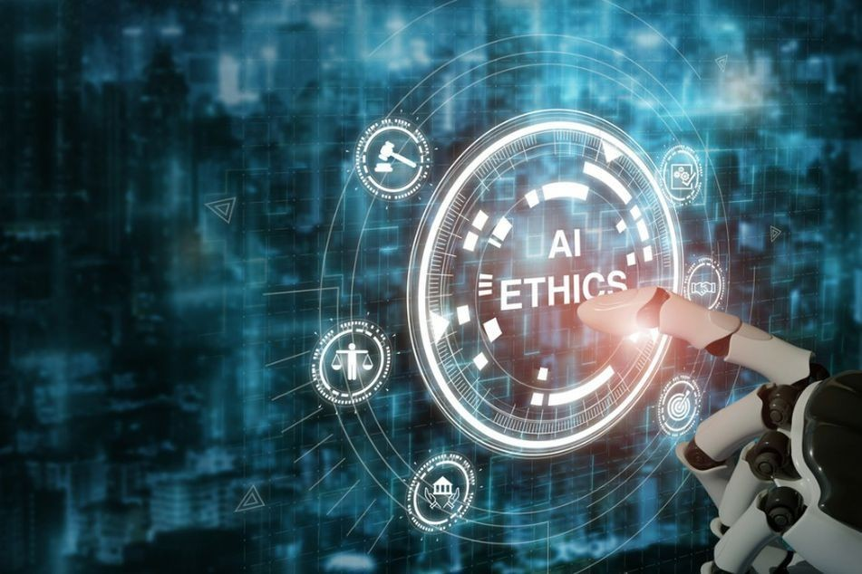

Understanding the Risks
Data Privacy Concerns
When using Generative AI tools, you may inadvertently share sensitive or personal information. This data can be stored, analysed, or even misused by third parties.
- Data Collection: AI tools often collect user data to improve their models, which can include personal information.
- Data Breaches: If the AI tool’s servers are hacked, your data could be exposed.
- Third-Party Access: Some AI tools share data with third parties for advertising or research purposes.
Tip: Always read the privacy policy of AI tools and avoid sharing sensitive information.
Misinformation and Deepfakes
Generative AI can create realistic but false content, such as fake news articles, images, or videos. This can lead to the spread of misinformation and erode trust in the media.
- Deepfakes: AI-generated videos or audio recordings that mimic real people, often used for malicious purposes.
- Fake News: AI can generate convincing but false news articles, leading to public confusion.
- Social Media Manipulation: AI-generated content can be used to manipulate public opinion on social media platforms.
Tip: Verify information from multiple credible sources before sharing it.
Bias in AI Models

AI models are trained on large datasets, which can contain biases. These biases can lead to unfair or discriminatory outputs.
- Gender Bias: AI tools may reinforce gender stereotypes in their outputs.
- Racial Bias: AI models may produce biased results based on race or ethnicity.
- Cultural Bias: AI tools may favour certain cultures or languages over others.
Tip: Be aware of potential biases and critically evaluate AI-generated content.
Copyright and Ownership Issues
It can be difficult to determine who owns the rights to AI-generated content, leading to legal and ethical challenges.
- Ownership: Is the content owned by the user, the AI developer, or the AI itself?
- Plagiarism: AI tools may generate content that closely resembles existing works, raising concerns about plagiarism.
- Legal Uncertainty: Copyright laws are still catching up with AI technology, creating legal grey areas.
Tip: Always credit original sources and be cautious when using AI-generated content for commercial purposes.
Job Displacement
The automation of creative tasks by AI could impact jobs in industries like writing, design, and music.
- Creative Industries: Writers, artists, and musicians may face competition from AI-generated content.
- Automation: Repetitive tasks like content generation or data analysis may be automated, reducing the need for human workers.
- Skill Shifts: Workers may need to learn new skills to adapt to an AI-driven economy.
Tip: Focus on developing skills that complement AI, such as creativity, critical thinking, and emotional intelligence.
Ethical Considerations
The development and use of Generative AI raise broader ethical questions about responsibility, accountability, and societal impact.
- Responsibility: Who is responsible for the actions of AI systems—developers, users, or the AI itself?
- Accountability: How can we ensure that AI systems are used ethically and responsibly?
- Societal Impact: What are the long-term effects of AI on society, including issues like inequality and access to technology?
Tip: Advocate for ethical AI development and use, and support policies that promote fairness and transparency.
Risk Assessment Quiz
Interactive Risk Scenarios
Scenario: You use an AI tool to generate a report for work. The tool includes sensitive company data in its output. What should you do?

Scenario: You see a video of a celebrity saying something controversial. How can you verify if it’s real or a deepfake?